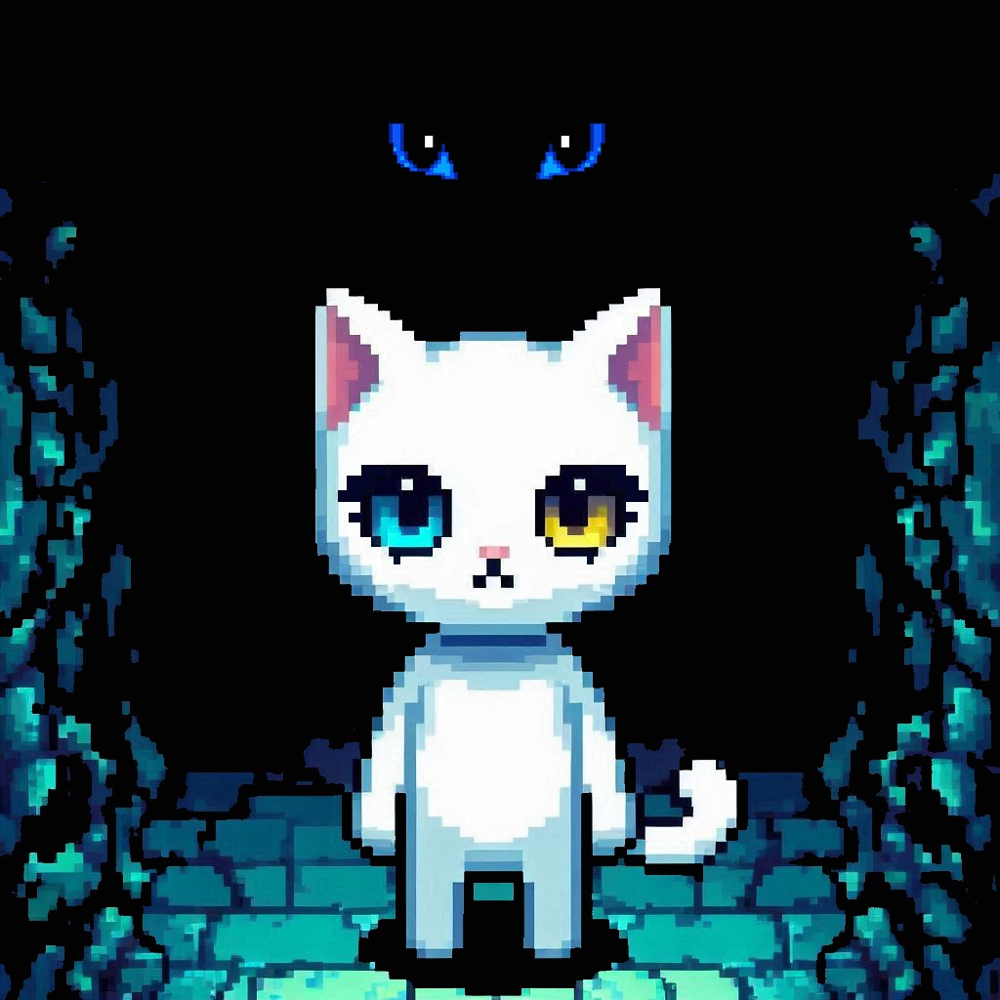

・┆✦ʚ♡ɞ✦ ┆・
En la mente de Hakumi, le espera el más terrible destino. Pero solo sucede cuando no prestamos atención a las emociones o hacemos algo para impedirlo, dejamos que las heridas se hagan más grandes y nos dejamos llevar por los miedos. Formando nuestro ser en una amalgama llena de desesperación y dolor.
Sin embargo, explorando y descubriendo los miedos, aprendemos cada vez más a aceptarlos e incluso a entenderlos. Nuestro deber es desafiar al destino, demostrar que somos capaces de “escapar de la oscuridad” o simplemente ser parte de ella. Aunque al principio la veas como enemiga, o un ser que busca destruir a todos, en el fondo busca un lugar en dónde sea entendida, la oscuridad después de todo es nuestra aliada.
La respuesta del poema al principio, es simplemente una forma de ver desde el otro punto de vista que se entiende normalmente, otra perspectiva que no muchos llegan a ver: La luz, muchas veces representada con la salvación, en esta historia no es la solución, ella extingue a la oscuridad que nosotros estamos buscando. Cuando esa lógica se quiebra por nuestra llegada, nos da la posibilidad de elegir cual camino es el mejor para Hakumi. Si vamos a la luz que nos deja ciegos, o si vamos a la oscuridad que nos permite ver.
Las personas siempre le temen a lo desconocido, prefieren a la luz que todos conocen. Pero incluso esos cambios nos hacen cada vez más fuertes.
⁺˚⋆｡°✩₊✩°｡⋆˚⁺

₊˚ʚ ᗢ₊˚✧ ﾟ.
Descripción:
Hakumi es una figura etérea, una pequeña gatita de pelaje blanco como la luna y ojos profundos bicolor, portadores de secretos y cicatrices que no necesitan palabras. Entre los pliegues de su pequeña alma y los ecos de su mente, Hakumi camina entre la luz y las sombras, tejiendo en cada paso un puente entre lo visible y lo oculto. Con una gracia melancólica, se mueve a través de los parajes oscuros, buscando fragmentos perdidos de un pasado que siente lejano, pero inexplicablemente familiar.
Hiraeth (Galés) - un anhelo nostálgico, a menudo por un lugar o momento que no existe en este mundo.
Personalidad:
Hakumi es una criatura que observa más de lo que habla, y siente más de lo que recuerda. Su alma, dividida entre la luz y su sombra, se debate entre aceptar los fragmentos de su pasado o desaparecer en él. Ella encarna la serenidad de quien entiende el silencio, pero también el dolor sutil de quien ansía una verdad perdida. Ella es tímida, sutil y tranquila. No obstante, bajo su aparente calma, hay un fuego suave y persistente, un anhelo de comprender y ser comprendida, y un deseo de escapar a un mundo que no conoce todavía.
Historia y Origen
Nadie conoce con certeza los orígenes de Hakumi, ni ella misma recuerda el principio de su existencia. Algunos rumores susurran que una vez perteneció a un lugar donde la luz y la sombra convivían en armonía. Pero una tragedia, un desgarro en la esencia misma de su ser, la dejó suspendida entre el recuerdo y el olvido (Trauma). Hakumi vaga en este laberinto oscuro, buscando piezas de sí misma, fragmentos perdidos de un alma rota, esperando que alguna vez, de alguna forma, pueda completarse de nuevo.
≽^- ˕ -^≼